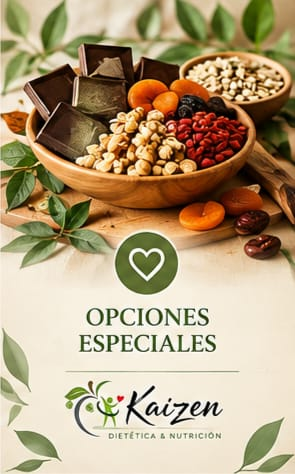

Dietética & nutrición
Elegir mejor, un paso a la vez.
Productos para tu despensa y un acompañamiento nutricional cercano, reunidos en un mismo lugar.

Compra como te quede mejorMercado Pago o WhatsApp, con retiro o envío.
Selección conscienteCalidad que podés reconocer.
Compra flexibleCuatro combinaciones de pago y entrega.
Nutrición profesionalTurnos presenciales o virtuales.
Categorías
Tu despensa, más simple
Buscá por nombre o artículo, compará precios y armá tu pedido.
Elegidos Kaizen
Para empezar por acá

Consultorio nutricional
Un plan que se adapta a tu vida.
La consulta es un espacio para entender tus hábitos y construir objetivos posibles, sin fórmulas rígidas.
- Consulta inicial de hasta 40 minutos
- Controles de 20 minutos
- Modalidad presencial o virtual
Contacto y ubicación
Estamos cerca para ayudarte.
Escribinos, encontranos en redes o visitanos en Juan José Castelli.